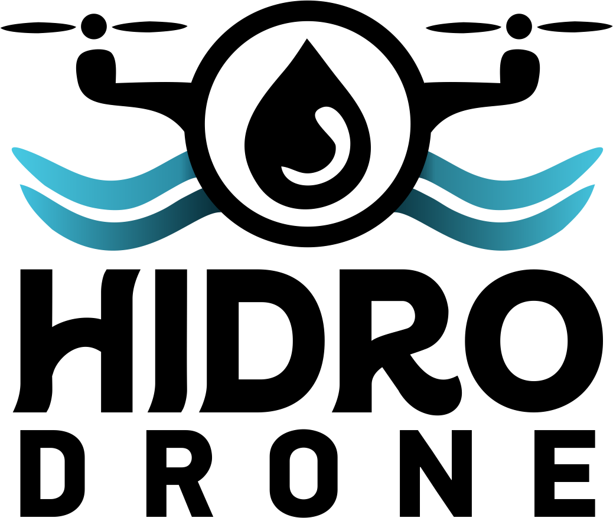

Propostas de landing page com o mesmo conteúdo e direções visuais diferentes. Toque em uma para abrir. As opções 05–07 são a nova rodada, focadas em quem contrata o serviço.
Clara, estilo manual de engenharia: seções numeradas, figuras com legenda e diagrama anotado da operação.
Abrir → Opção 02Industrial pesado: tipografia monumental, amarelo-segurança, fita zebrada e números gigantes.
Abrir → Opção 03Fluida e elegante: ondas entre seções, vidro fosco, vídeo no hero e slider antes/depois interativo.
Abrir → Opção 04Escura e dramática: fotos reais contra fundo petróleo, reel em destaque e galeria de operações.
Abrir → Opção 05 · NovaConversion-first para o síndico: azul profissional, prova social acima da dobra, galeria de vídeos reais e FAQ.
Abrir → Opção 06 · NovaEstilo empresa de tecnologia: muito respiro, tipografia grande, vídeo full-bleed e specs do serviço como ficha de produto.
Abrir → Opção 07 · NovaEstilo case study de revista: serif elegante, off-white quente, portfólio com legendas numeradas e storytelling.
Abrir → Opção 08 · Síntese da pesquisaConstruída sobre os padrões dos 14 sites pesquisados: enquadramento "o drone substitui o andaime", estimador de orçamento via WhatsApp e vídeos reais como prova.
Abrir → Opção 09 · Nova direçãoTipográfica e interativa: o drone é um rodo que lava a headline; sujo = terroso, limpo = azul-água. Bricolage Grotesque, bandas de vídeo full-bleed.
Abrir → Opção 10 · Briefing do LucasBase alt-5 com o documento de feedback aplicado seção a seção: novo título, Quem somos (ficha técnica), 5 serviços, carrossel de trabalhos, antes/depois, clientes e orçamento no modelo alt-3.
Abrir → Opção 11 · Drone lavadorCópia do alt-10 com assinatura animada: título do hero coberto de sujeira que o usuário lava movendo o drone (mangueira vinda da unidade de pressão no chão, bico e jato); na seção Serviços o drone lava sozinho, linha por linha, e recomeça. Seletor de idioma PT / EN / DE no header.
Abrir →